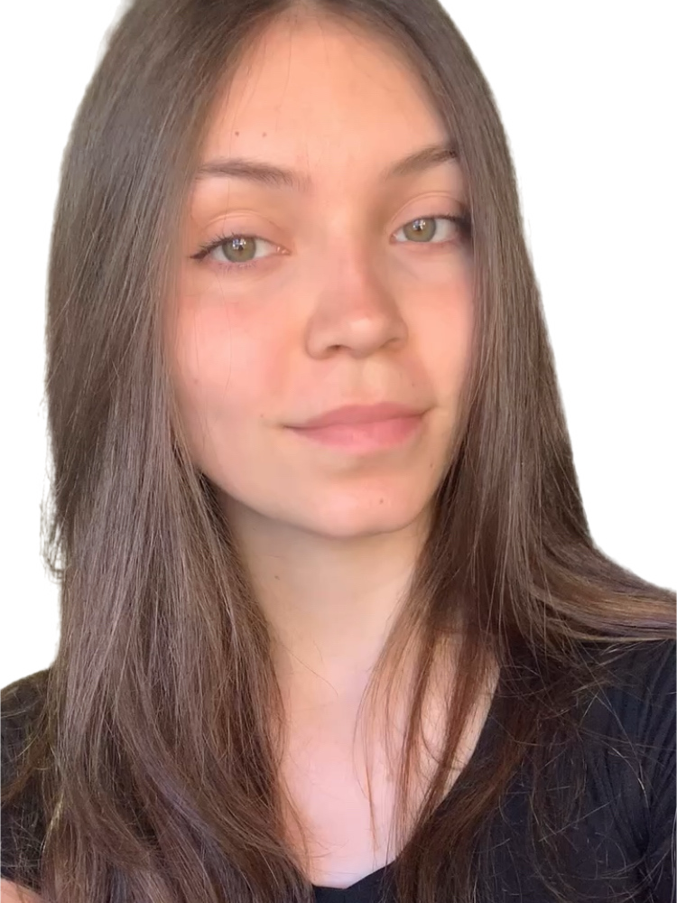

Sobre Mim
Sou uma desenvolvedora front-end em formação pelo Instituto da Oportunidade Social (IOS), onde domino HTML, CSS e JavaScript para transformar ideias em interfaces funcionais.
Busco minha primeira oportunidade na área para unir lógica e criatividade, criando experiências digitais que resolvam problemas reais.
Minhas Habilidades
Resolução de Problemas
Procuro sempre resolver problemas de forma criativa e inovadora.
Organização
Gosto de sempre deixar minhas tarefas organizadas e bem feitas.
Criatividade
Sempre fui uma pessoa que gosta de pensar em novas soluções.